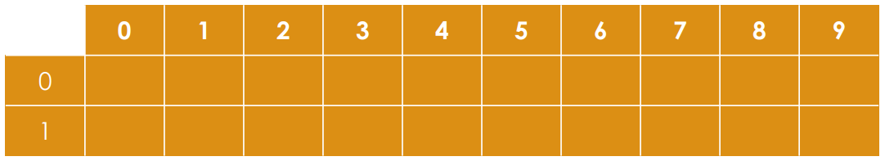

迴圈與陣列
作者: D1stance
迴圈
如果喜歡的人跟你說，如果你對她說 100 次「我愛你」，她就會嫁給你， 你會怎麼做？
第一個想法是，打好一次「我愛你」的字串，然後複製貼上 100 次， 這樣有點慢，於是聰明的你想到可以打一個字串後，複製貼上，接著複製全部的字串， 然後再貼上，這樣每次行數就會翻倍，只要 \(\log_2(100)\) 次就可以完成。
聽起來好像沒有很麻煩？那如果今天你是通識課的助教，總共有 100 位學生修了這堂課，你要幫他們進行學期成績的計算，總共有 20 個分項需要加權計算， 如果有同學作業全繳，但總成績離及格線不超過 5 分，教授可以把他們撈起來， 你會怎麼做？
除了重複的計算動作之外，還需要處理條件判斷，這時你就想到了使用程式來協助你， 條件判斷上一個章節已經有介紹過了， 這一個章節我們要介紹的是迴圈，讓你可以重複執行某些動作。
迴圈是一段在程式碼中出現一次，但是可能會被執行多次的程式碼， 用來處理重複的計算或動作。
While 迴圈
當條件達成，就會執行迴圈內的程式碼，直到條件不再成立為止。
while(條件)
{
// 迴圈內的程式碼
}
例如，如果我們要印出「我愛你」 很多次，可以這樣寫：
while(true)
cout << "我愛你\n"; // 印出「我愛你」
這樣每次迴圈印出「我愛你」，直到程式被強制終止。
如何中止迴圈呢？ 你可以按鍵盤上的 Ctrl + C， 這會強制終止程式的執行。
這樣我們要在剛好第 100 次時中止迴圈， 這是一個很困難的任務，我們不想考驗自己的記憶力跟手速， 迴圈應該有更好的用法。
我們可以使用一個變數來計算已經執行了多少次迴圈， 然後在每次迴圈結束時增加這個變數的值， 這樣就可以在第 100 次時中止迴圈。
int count = 0; // 計數器
while(count < 100) // 當計數器小於 100 時
{
cout << "我愛你\n"; // 印出「我愛你」
count = count + 1; // 計數器加 1
}
這樣程式碼會在印出「我愛你」 100 次後自動結束， 因為 100 不會小於 100。
在這裡，count 是一個計數器，用來記錄迴圈執行的次數，
count < 100 是我們的判斷式，當 count 小於 100 時，迴圈會繼續執行，
count = count + 1 是每次迴圈結束時，將計數器加 1，稱為調整式，
每次迴圈執行時，計數器都會增加 1，
直到 count 等於 100 時，迴圈結束。
Self Assignment and Increment
你可能會注意到 count = count + 1 這行程式碼，
這是將自己的值進行更新，稱為 Self Assignment，
在 C++ 中，這種寫法是很常見的，
但這樣寫有點冗長，我們可以使用更簡潔的寫法：
count += 1; // 計數器加 1
這樣寫的效果跟 count = count + 1 一樣，但是更簡潔，
當然，這個寫法不只適用於加 1，
還可以用來加減乘除模等其他運算還有位元運算。
而加一和減一是最常用的運算， 所以 C++ 還提供了更簡潔的寫法：
count++; // 計數器加 1
這樣寫的效果跟 count += 1 一樣，但是更簡潔，
這種寫法稱為 Increment，用來增加變數的值。
這種遞增遞減運算，有兩種情況，
- 前置遞增：
++count，先增加再使用。 - 後置遞增：
count++，先使用再增加。
前置遞增和後置遞增的差別在於，前置遞增會先增加變數的值， 而後置遞增會先使用變數的值，再增加變數的值， 我們可以用一個簡單的例子來說明：
int count = 0;
cout << ++count << '\n'; // 前置遞增，輸出 1
cout << count++ << '\n'; // 後置遞增，輸出 1
cout << count << '\n'; // 輸出 2
這裡的 ++count 會先將 count 的值增加 1，然後輸出，
而 count++ 會先輸出 count 的值，然後再將 count 的值增加 1，
所以最後輸出的 count 的值是 2。
Do While 迴圈
跟 while 迴圈類似，但是會先執行一次迴圈內的程式碼，
然後再判斷條件是否成立。
do
{
// 迴圈內的程式碼
}while(條件);
For 迴圈
如果我們知道迴圈實際上需要執行多少次，
其實我們可以使用 for 迴圈，
for 迴圈的語法如下：
for(初始式; 條件式; 調整式)
{
// 迴圈內的程式碼
}
對標到一開始的例子，
初始式就是設計計數器 count 的初始值，
條件式就是滿足該條件時才會執行迴圈內的程式碼，
調整式就是每次迴圈結束時，計數器的更新方式。
我們可以這樣寫一百次我愛你
for(int count = 0; count < 100; count++)
{
cout << "我愛你\n"; // 印出「我愛你」
}
這樣寫的好處是，迴圈的初始值、條件和調整都在同一行， 讓程式碼更簡潔易讀。
練習題
現在有一個函數 \( \displaystyle f(x) = \sum_{i=1}^{x} i\)， 對於給定的正整數 \(x\)， 請你計算 \(f(x)\) 的值。
輸入格式
一行包含一個正整數 \(x\)。
輸出格式
一行包含 \(f(x)\) 的值。
技術規格
\(1 \leq x \leq 10^6\)
範例輸入
10
範例輸出
55
範例答案
#include <iostream>
using namespace std;
int main()
{
int x;
cin >> x; // 讀取正整數 x
long long sum = 0; // 初始化總和為 0
for(int i = 1; i <= x; ++i) // 從 1 到 x
{
sum += i; // 將 i 加到總和中
}
cout << sum << '\n'; // 輸出總和
return 0;
}
因為 \(f(x)\) 的值最大約為 \(x^2\)，
又因為 \(x\) 的最大值為 \(10^6\)，
所以我們使用 long long 型態來儲存總和，
以避免溢位的問題。
那麼學生成績的計算呢？我們可以這樣寫：
for(int i = 0; i < 100; ++i)
{
int s1, s2, s3 ..... s20;
// 20 個分項
cin >> s1 >> s2 >> s3 .... >> s20;
// 讀取分項成績
int total = s1 * 0.1 + s2 * 0.1 + s3 * 0.1 + ... + s20 * 0.1;
// 計算總成績
int homework = (s1 != 0) + (s2 != 0) + (s3 != 0) + ... + (s5 != 0);
// 計算作業繳交數量
if(total >= 60)
cout << "學生 " << i + 1 << " 成績及格，總成績：" << total << '\n';
else if(homework == 5 && total >= 55)
cout << "學生 " << i + 1 << " 成績撈起來，總成績：" << total << '\n';
else
cout << "學生 " << i + 1 << " 成績不及格，總成績：" << total << '\n';
}
這樣就可以計算 100 位學生的成績了， 但是這樣寫有一個問題， s1, s2, s3 ... s20 實在是太多變數了，我們需要一個工具來幫助我們儲存一整組的資料，這個工具就是陣列。
陣列
陣列是一種資料結構，可以用來儲存一組相同類型的資料， 例如我們要儲存 100 位學生的成績， 我們可以使用陣列來儲存這些成績。
我們可以這樣宣告一個陣列：
int scores[100]; // 宣告一個大小為 100 的陣列
這樣的意思是，我們宣告了一個名為 scores 的陣列，
型態為 int，大小為 100，程式會在記憶體中取一塊連續的空間來儲存這 100 個 int 型態的數值。
不同的宣告與初始化方式
陣列可以有不同的初始化方式，以下是幾種常見的方式：
int scores[100];
// 宣告一個大小為 100 的陣列，裡面是隨機的數值
int scores[100] = {0};
// 宣告一個大小為 100 的陣列，並將所有元素初始化為 0
int scores[] = {1, 2, 3, 4, 5};
// 宣告一個大小為 5 的陣列，並初始化為 {1, 2, 3, 4, 5}
int scores[5] = {1, 2, 3, 4, 5};
// 跟上面一樣，但有指定大小
int scores[5] = {1, 2, 3};
// 宣告一個大小為 5 的陣列，前 3 個元素初始化為 {1, 2, 3}，後面兩個元素為 0
陣列的大小在宣告時就已經確定了，不能在程式執行時改變， 取值時可以使用索引來存取陣列中的元素，索引從 0 開始， 例如：
scores[0] = 90; // 將第一個元素設為 90
scores[1] = 85; // 將第二個元素設為 85
scores[2] = 80; // 將第三個元素設為 80
這樣就可以將陣列中的元素設為指定的值。
我們也可以透過輸入來初始化陣列，例如：
for(int i = 0; i < 100; ++i)
cin >> scores[i]; // 讀取成績
這樣就可以讀取 100 位學生的成績，並將它們儲存在 scores 陣列中。
剛才有 100 位學生，每位學生有 20 個分項成績， 這時候我們需要二維陣列來儲存這些成績。
如果宣告 int array[2][10]，代表陣列會如同下圖：

也就是說，這個陣列有 2 個元素，每個元素都是一個大小為 10 的陣列， 所以這個陣列的大小是 2 * 10 = 20。
我們可以透過陣列的索引來存取二維陣列中的元素， 完成我們的學生成績計算：
int scores[100][20]; // 宣告一個大小為 100 x 20 的二維陣列
for(int i = 0; i < 100; ++i)
{
for(int j = 0; j < 20; ++j)
cin >> scores[i][j]; // 讀取每位學生的 20 個分項成績
int total = 0;
for(int j = 0; j < 20; ++j)
total += scores[i][j] * 0.1; // 計算總成績
int homework = 0;
for(int j = 0; j < 5; ++j)
homework += (scores[i][j] != 0); // 計算作業繳交數量
if(total >= 60)
cout << "學生 " << i + 1 << " 成績及格，總成績：" << total << '\n';
else if(homework == 5 && total >= 55)
cout << "學生 " << i + 1 << " 成績撈起來，總成績：" << total << '\n';
else
cout << "學生 " << i + 1 << " 成績不及格，總成績：" << total << '\n';
}
這樣就可以計算 100 位學生的成績了， 並且使用二維陣列來儲存每位學生的 20 個分項成績。
使用陣列常見的錯誤
1. 陣列越界
陣列的索引從 0 開始，所以如果你宣告了一個大小為 100 的陣列， 你可以存取的索引範圍是 0 到 99， 如果你試圖存取索引 100 或更大的值，會導致陣列越界， 可能會取到非預期的值，或者導致程式崩潰，造成 Runtime Error。
2. 陣列未初始化
如果你宣告了一個陣列，但是沒有初始化它， 陣列中的元素會是隨機的值， 這可能會導致程式在使用陣列時出現錯誤， 這樣會在每次執行程式碼時得到不同的結果，
3. 陣列開太大
如同前面提到的，陣列是一段連續的記憶體空間，
所以我們也沒辦法一次開一個宇宙大小的陣列，
如果你宣告了一個過大的陣列，可能會導致 Memory Limit Exceeded，
使用型態為 int 的陣列時，通常大小不會超過 \(10^7\)。
動態陣列 Vector
在 C++ 中，陣列的大小是固定的，由於我們有可能不一定一開始就知道需要多大的陣列，
所以 C++ 提供了一個動態陣列的資料結構，稱為 vector，
vector 是一個可以動態調整大小的陣列，
使用 vector 可以讓我們在程式執行時動態地增加或減少陣列的大小。
使用 vector 的方式如下：
#include <iostream> // 引入輸入輸出標頭檔
#include <vector> // 引入 vector 標頭檔
using namespace std;
int main()
{
vector<int> vt;
return 0;
}
vector<int> vt; 這行程式碼宣告了一個 int 型態的動態陣列 vt，
我們可以使用 push_back 方法來增加元素，使用 size 方法來取得目前的大小。
vt.push_back(1); // 將 1 加入到 vector 中
vt.push_back(2); // 將 2 加入到 vector 中
cout << vt.size() << '\n'; // 輸出 vector 的大小，應該是 2
當然，我們也可以一開始就指定 vector 的大小：
vector<int> vt(100);
// 宣告一個大小為 100 的 vector，內容為 0
vector<int> vt(100, 10);
// 宣告一個大小為 100 的 vector，內容為 10
一樣可以透過索引來存取 vector 中的元素：
vt[0] = 1; // 將第一個元素設為 1
vt[1] = 2; // 將第二個元素設為 2
cout << vt[0] << ' ' << vt[1] << '\n'; // 輸出 1 2
其餘常用語法
vt.empty(); // 判斷 vector 是否為空
vt.pop_back(); // 移除 vector 中的最後一個元素
vt.front(); // 取得 vector 中的第一個元素
vt.back(); // 取得 vector 中的最後一個元素
vt.clear(); // 清空 vector 中的所有元素
vt.resize(50);
// 將 vector 的大小調整為 50，如果原本的大小大於 50，
// 則會移除多餘的元素，如果小於 50，則會新增元素並初始化為 0
vt.assign(100, 10);
// 將 vector 的大小調整為 100，並將所有元素初始化為 10
以上就是常見的語法，剩下的語法可以參考 C++ STL vector。
二維 Vector
如果我們需要儲存二維的資訊，我們可以把原本 vector<int> vt 的 int 改成 vector<int>，
這樣在 vector 中放置的元素就可以是另一個 vector，
這樣就可以實現二維 vector 的功能。
vector<int> vt(100, 0); // 宣告一個大小為 100 的 vector，內容為 0
vector<vector<int>> vt_2d(100, vt); // 宣告一個大小為 100 x 100 的二維 vector，內容為 0
迴圈特殊語法以及 EOF
最後來講講一些迴圈中的好用語法，break 和 continue。
break 可以用來跳出當前的迴圈，可以搭配 if 條件使用，
例如：
for(int i = 0; i < 100; ++i)
{
if(i == 50) // 當 i 等於 50 時
break; // 跳出迴圈
cout << i << ' '; // 印出 i 的值
}
這樣程式碼會印出 0 到 49 的數字，當 i 等於 50 時，跳出迴圈。
continue 可以用來跳過當前的迴圈，繼續下一次迴圈，
例如：
for(int i = 0; i < 100; ++i)
{
if(i % 2 == 0) // 當 i 是偶數時
continue; // 跳過這次迴圈
cout << i << ' '; // 印出 i 的值
}
這樣程式碼會印出 1、3、5、7 ... 99 的數字，當 i 是偶數時，跳過這次迴圈。
這樣就可以在迴圈中使用 break 和 continue 來控制迴圈的執行。
EOF
有時候，我們需要處理不定長度的輸入，
像是讀取若干行的數字，直到沒有更多的輸入為止，
這時候我們可以使用 EOF（End of File）來判斷輸入是否結束。
在 C++ 中，可以使用 cin 的輸入流來判斷是否到達 EOF，
例如：
#include <iostream>
#include <vector>
using namespace std;
int main()
{
vector<int> numbers; // 用來儲存輸入的數字
int num;
while(cin >> num) // 當有數字輸入時
{
numbers.push_back(num); // 將數字加入到 vector 中
}
// 印出所有輸入的數字
for(int n : numbers)
cout << n << ' ';
return 0;
}
這段程式碼會持續讀取輸入的數字，直到沒有更多的輸入為止，
然後將所有輸入的數字儲存在 vector 中，
最後印出所有的數字。
那我們可以在終端機中輸入數字，然後按下 Ctrl + D（Linux/Mac）或 Ctrl + Z（Windows）來結束輸入，
這樣程式就會讀取到 EOF，並結束迴圈。
大量輸出入造成的問題
在 C+++ 中，使用 cin 和 cout 進行大量輸入輸出時，
可能會導致程式執行速度變慢，
這是因為 cin 和 cout 是同步的，因為它想要達成使用者互動，
所以每次輸入輸出都會進行同步操作，
這會導致程式在處理大量輸入輸出時變得非常慢。
因為競程比賽中，它通常只會比較最後的輸出結果，只有少數題型需要與題目互動， 所以我們可以使用下列的程式碼來加速輸入輸出：
ios::sync_with_stdio(false); // 關閉同步
cin.tie(false); // 解除 cin 與 cout 的綁定
這樣就可以加速輸入輸出，讓程式在處理大量輸入輸出時變得更快， 但是只有最後才會看到完整的輸出結果， 如果你要除錯，可以先把這兩行註解掉， 最後上傳到評測系統時再加上去。
也可以使用 cerr 來輸出除錯資訊，
但是 cerr 是不會被同步的，所以雖然不會影響輸出結果，
但是還是會拖慢程式的執行速度。
小結
在這一章中，我們介紹了迴圈和陣列的基本概念，
迴圈可以用來重複執行某些動作，而陣列可以用來儲存一組相同類型的資料，
我們學習了 while、do while 和 for 迴圈的用法，
以及如何使用陣列來儲存資料，
同時也學習了如何使用二維陣列來儲存多維資料。
在 C++ 中，陣列的大小是固定的，
如果需要動態大小的陣列，可以使用 vector，
同時我們也學習了如何加速輸入輸出，
這對於競程比賽來說是非常重要的。
在下一章中，我們將介紹指標和字元字串， 這是 C++ 中非常重要的概念， 讓我們可以更靈活地操作資料， 並且能夠更有效地使用記憶體。
題單
- CSES 1068 - Weird Algorithm
- CSES 1083 - Missing Number
- CSES 1069 - Repetitions
- CSES 1070 - Permutations
- CSES 1071 - Number Spiral